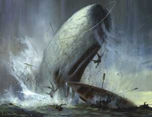

Call me Ishmael. Some years ago - never mind how long precisely - having little or no money in my purse, and nothing particular to interest me on shore, I thought I would sail about a little and see the watery part of the world.
It is a way I have of driving off the spleen, and regulating the circulation. Whenever I find myself growing grim about the mouth; whenever it is a damp, drizzly November in my soul; whenever I find myself involuntarily pausing before coffin warehouses, and bringing up the rear of every funeral I meet; and especially whenever my hypos get such an upper hand of me, that it requires a strong moral principle to prevent me from deliberately stepping into the street, and methodically knocking people's hats off - then, I account it high time to get to sea as soon as I can. This is my substitute for pistol and ball. With a philosophical flourish Cato throws himself upon his sword; I quietly take to the ship. There is nothing surprising in this. If they but knew it, almost all men in their degree, some time or other, cherish very nearly the same feelings towards the ocean with me.
There now is your insular city of the Manhattoes, belted round by wharves as Indian isles by coral reefs - commerce surrounds it with her surf. Right and left, the streets take you waterward. Its extreme down-town is the battery, where that noble mole is washed by waves, and cooled by breezes, which a few hours previous were out of sight of land. Look at the crowds of water-gazers there.
Circumambulate the city of a dreamy Sabbath afternoon. Go from Corlears Hook to Coenties Slip, and from thence, by Whitehall northward. What do you see? - Posted like silent sentinels all around the town, stand thousands upon thousands of mortal men fixed in ocean reveries. Some leaning against the spiles; some seated upon the pier-heads; some looking over the bulwarks of ships from China; some high aloft in the rigging, as if striving to get a still better seaward peep. But these are all landsmen; of week days pent up in lath and plaster - tied to counters, nailed to benches, clinched to desks. How then is this? Are the green fields gone? What do they here?
But look! here come more crowds, pacing straight for the water, and seemingly bound for a dive. Strange! Nothing will content them but the extremest limit of the land; loitering under the shady lee of yonder warehouses will not suffice. No. They must get just as nigh the water as they possibly can without falling in. And there they stand - miles of them - leagues. Inlanders all, they come from lanes and alleys, streets and avenues, - north, east, south, and west. Yet here they all unite. Tell me, does the magnetic virtue of the needles of the compasses of all those ships attract them thither?
Once more. Say, you are in the country; in some high land of lakes. Take almost any path you please, and ten to one it carries you down in a dale, and leaves you there by a pool in the stream. There is magic in it. Let the most absent- minded of men be plunged in his deepest reveries - stand that man on his legs, set his feet a-going, and he will infallibly lead you to water, if water there be in all that region. Should you ever be athirst in the great American desert, try this experiment, if your caravan happen to be supplied with a metaphysical professor. Yes, as every one knows, meditation and water are wedded for ever.
But here is an artist. He desires to paint you the dreamiest, shadiest, quietest, most enchanting bit of romantic landscape in all the valley of the Saco. What is the chief element he employs? There stand his trees, each with a hollow trunk, as if a hermit and a crucifix were within; and here sleeps his meadow, and there sleep his cattle; and up from yonder cottage goes a sleepy smoke. Deep into distant woodlands winds a mazy way, reaching to overlapping spurs of mountains bathed in their hill-side blue. But though the picture lies thus tranced, and though this pine-tree shakes down its sighs like leaves upon this shepherd's head, yet all were vain, unless the shepherd's eye were fixed upon the magic stream before him.